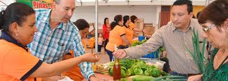
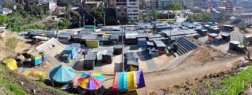
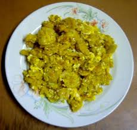
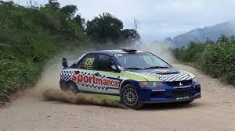

Festividades y Celebraciones
Las fiestas tradicionales en Piñas incluyen la Fiesta de la Virgen de la Merced, donde la comunidad se reúne para celebrar con procesiones, música y danzas típicas.

Costumbres Locales
Los piñasienses tienen un fuerte sentido de comunidad. Las ferias artesanales y la preparación de platos típicos son un reflejo de su cultura.
Tendidos
Feria comercial que se realiza en septiembre, con juegos de atracciones como carros chocones, la rueda moscovita y el carrusel.
Sopeado
Se brinda en las visitas, una versión de tigrillo en donde el plátano se mezcla con huevo y un refrito de cebolla.
Rally
El Circuito Tradicional Ciudad Piñas es un evento que se ha convertido en un clásico de las festividades cantonales de Piñas. El éxito de esta edición demuestra el gran interés que despierta este evento en la comunidad, tanto local como nacional.
